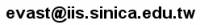

目錄表
2014 Formosan Summer School on Logic, Language, and Computation (FLOLAC '14)
News
- [2014/04/16] Website released.
Aim and Scope
Researchers in Taiwan who are interested in the foundational aspects of computing science have founded a number of research teams and worked together in some joint projects. As in any discipline, a student will have to go through a series of courses to be prepared for further research in this field. Being affiliated to different institutes, however, the researchers often find it difficult to lecture all these courses alone. It is thus desirable to bring together those who share a common interest and give lectures together.
The aim of this summer school is to give a collection of courses that would prepare the students with enough knowledge to carry on research in foundational computing science. The courses on the even years cover advanced topics in programming languages, those on the odd years on model checking and program verification. The theme of this year is “Advanced Programming Languages and Type Systems”.
FLOLAC was held in 2007, 2008, 2009, 2010, 2011, 2012, 2013.
The summer school consists of 54 hours of lectures and lab/tutor sessions. In addition, there is a 3-hour exam and a 3-hour research seminar. Students who passed the exam will be awarded 3 credits from National Taiwan University.
Date and Venue
- Date: from 6/30 (Monday) to 07/11 (Friday), ten days in whole.
- Time: every weekday from 09:10 to 16:20.
- Venue: National Taiwan University; the exact venue will be announced in days.
Courses and Lecturers
Time Table
| 06/30 | 07/01 | 07/02 | 07/03 | 07/04 | 07/07 | 07/08 | 07/09 | 07/10 | 07/11 | ||
|---|---|---|---|---|---|---|---|---|---|---|---|
| 09:10 - 12:10 | FP | TT | TT | TT | OpS | OpS | DeS | SL | SL | Exam | |
| 12:20 - 13:10 | Lunch | ||||||||||
| 13:20 - 16:20 | FP* | DTP | DTP | TT* | Talk | TT | OpS* | DeS | Talk | ||
- The start* following a course name means it's a hands-on lab
- FLOLAC'14 will slightly adjust the time table if needed.
Registration
FLOLAC '14 will be held as an official 3-credit summer course in the first echelon at National Taiwan University. The official course number and course name are “725 U3500 程式語言理論與型態系統”.
- For NTU student
- Register online during 06/12 to 06/13 on the website of summer session.
- Manual Add/Drop Period: 06/19 to 06/20.
- For non-NTU student
- Register online as a non-NTU student during 06/04 to 06/05 on the website of summer session.
- Hand over the application documents (need to be recognized by your school) to the Office of Academic Affairs on 06/12.
- Please check out the related rule on cross-school summer courses of your own school.
- For non-student, please contact
 .
.
For details, visit Registration.
Accommodation
- For participants needing accommodation, please email your contact information and the date of accommodation needed to  before 06/13.
- We planned to book your room at Shida(NTNU) Dormitory; the cost of a quad room is NTD500 per person per one night. We will arrange the list of roommates for you.
Organisation
- The summer school is jointly organised by Institute of Information Science, Academia Sinica, Department of Information Management, National Taiwan University. It is an official summer course offered by National Taiwan University.
Organising Commitee
Local Arrangements
- 張少娟 Shao-Chuan Chang, Institute of Information Science, Academia Sinica.
TA Contact